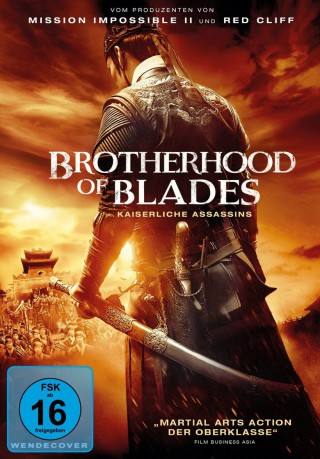

#2032 Brotherhood of Blades
Alternativ: Xiu chun dao (Originaltitel)
 
 IMDB-Wertung: 6.6 / 10
IMDB-Wertung: 6.6 / 10  Metascore: 0
Metascore: 0 
1627, als die Ming-Dynastie ihrem Ende zugeht, dienen drei Brüder als Assassins in einer Elitetruppe der kaiserlichen Garde. Ihr erster Auftrag vom frisch eingesetzten jungen Kaiser: Findet alle Anhänger des Eunuchen Wei und tötet sie. Doch bald müssen die drei erkennen, dass sie das Bauernopfer in einer gewaltigen Verschwörung sein sollen.
Jahr: 2014
Dauer: 111 Minuten
FSK: 16
Land: China Studio: Edel Media & EntertainmentTonspuren:
Untertitel:
Auflösung: 1080p (1920x800) Größe: 5365 MB
Genre: Action
Regisseur: Yang Lu
Drehbuch: Shu Chen, Yang Lu
Soundtrack: Nathan Wang
Darsteller:
 Chen Chang als Shen Lian
Chen Chang als Shen Lian- Shih-Chieh Chin als Wei Zhongxian
- Zhu Dan als Wei Ting
- Dong-xue Li als Jin Yichuan
- Shi Shi Liu als Zhou Miaotong
- Yuan Nie als Zhao Jingzhong
- Qianyuan Wang als Lu Jianxing
- Qing Ye als Zhang Yan
- Lixin Zhao als Han Kuang
- Yi Wei Zhou als Ding Xiu
- Yiwei Zhou als Ding Xiu
- Dan Zhu als Wei Ting
Datei: X:\HD-Eastern-Collections\Brotherhood of Blades\Brotherhood of Blades (2014, FSK16, 1920x800).mkv seit 25.09.2015
Festplatte: HD Eastern+Western
 Alle Filme aus Gruppe 'HD-Eastern-Collections\Brotherhood of Blades'
Alle Filme aus Gruppe 'HD-Eastern-Collections\Brotherhood of Blades'